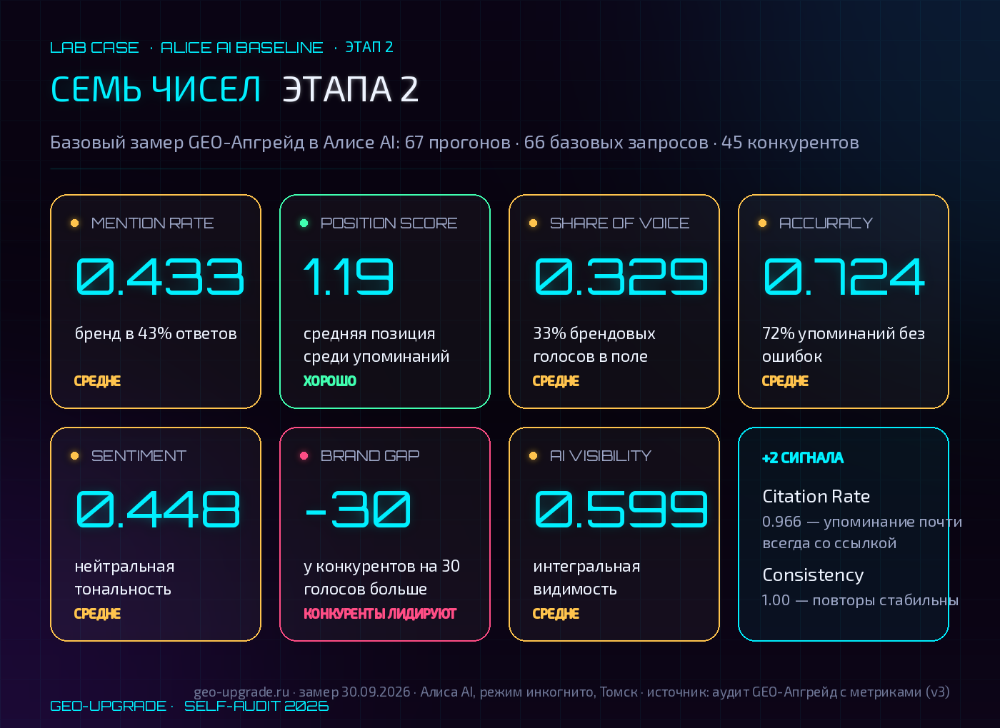
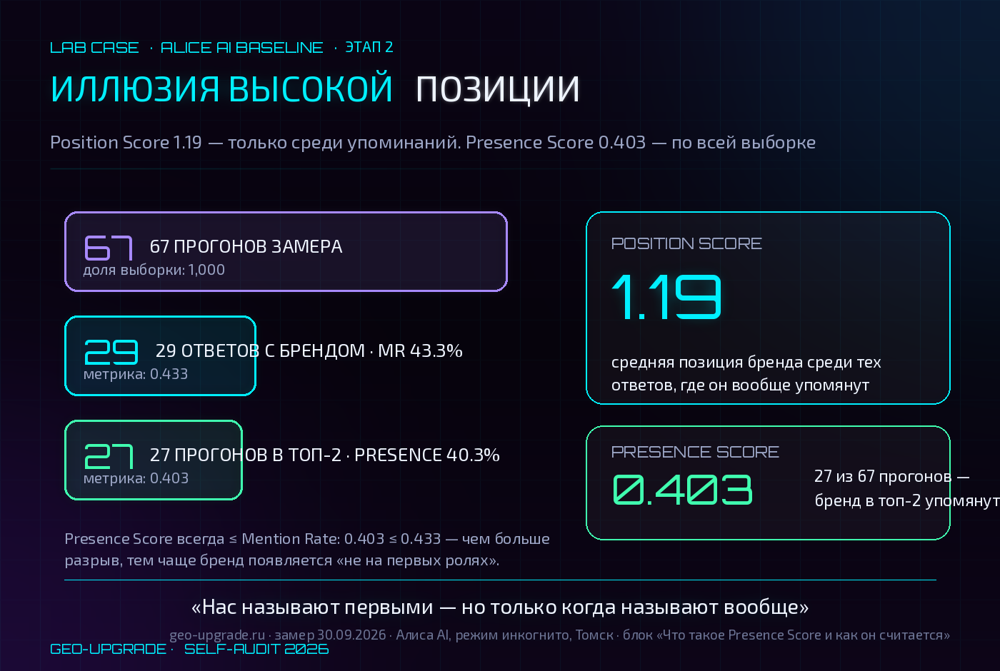
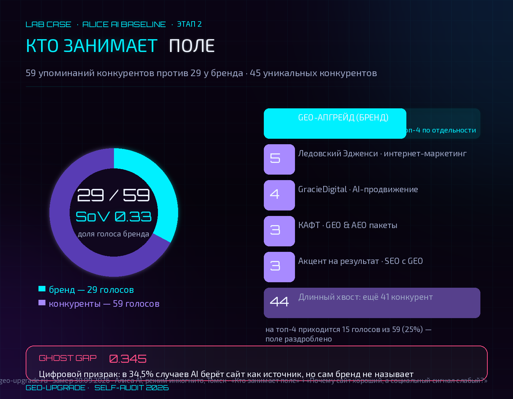
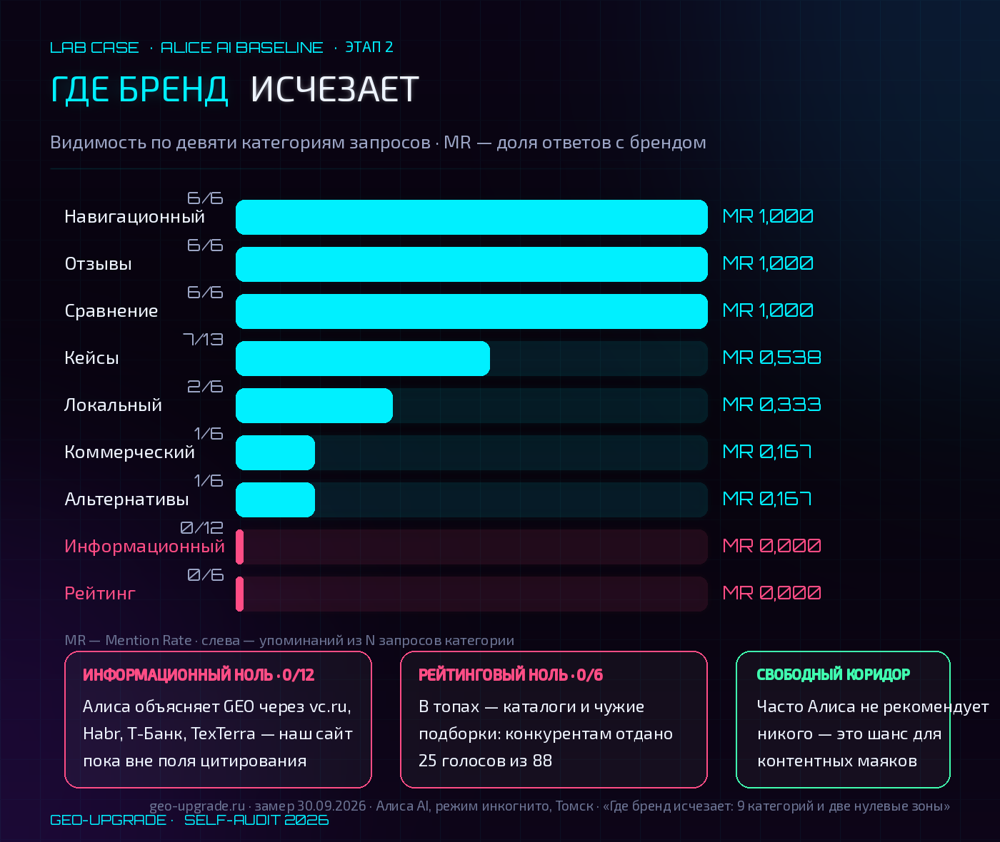
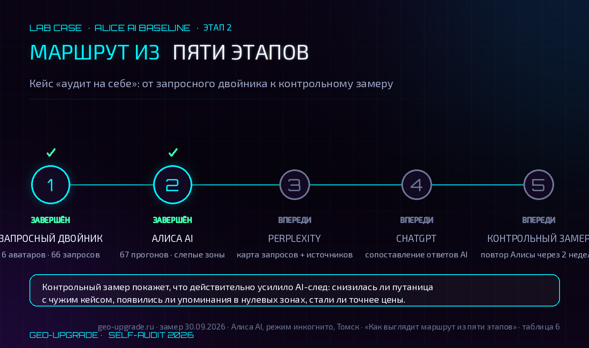

Лаборатории — месяц. Сайту — неделя. Что покажет AI?
Лаборатории GEO-Апгрейд — месяц. Сайту — ровно неделя.
Это не оправдание. Это стартовая точка.
Когда я начинала этот аудит, я не знала, что увижу в ответах Алисы. Будет ли там вообще упоминание GEO-Апгрейд? Или нейросеть ответит «не знаю» на 66 запросов из 66?
Результат оказался лучше, чем я ожидала.
Несмотря на то, что моему детищу всего месяц, а сайту и того меньше — ровно неделя, результаты оказались лучше, чем я ожидала. Несмотря на пока небольшие цифры в метриках и упоминаниях по сравнению с конкурентами, это уже достижение на данном этапе развития лаборатории.
Алиса AI нас знает. Подробно описывает. Сравнивает с конкурентами — и больше чем в половине сравнений в нашу пользу.
Но в топовые рейтинги не вносит. В информационных запросах не цитирует. И 21 раз в ответах о GEO-Апгрейде упоминает чужой кейс в одном контексте с нами — не во всех 21 случаях нас путали с чужой услугой или приписывали нам этот кейс, иногда просто упоминали в одном ответе.
Это не провал. Это карта.
В этой статье — полный разбор второго этапа: метрики, слепые зоны, конкуренты, площадки и маршрут, который превращает эти данные в действия.
Как мы проводили аудит: протокол замера
Аудит выполнялся по строгому лабораторному протоколу:
- 66 базовых запросов + 1 повторный прогон (№199 по запросу №20);
- Яндекс Браузер, режим инкогнито, без аккаунта, регион Томск;
- Для каждого прогона фиксировались: полный текст ответа AI, упоминание бренда (1/0), позиция, точность, тональность, наличие ссылки, список конкурентов, источники.
После первичного заполнения была проведена двойная проверка: сверка всех 67 строк с полными текстами ответов, исправление 50+ расхождений, пересчёт метрик по единым правилам.
Все правки задокументированы в таблице с пометками «[Правка 30.09: …]». Исходные значения не затёрты — видны в комментариях.
Что показали метрики: 7 чисел, которые меняют всё
Таблица 1 · Семь метрик этапа 2
| Метрика | Значение | Что означает |
|---|---|---|
| Mention Rate | 0.433 | Бренд упоминается в 43% запросов |
| Position Score | 1.19 | Когда упоминаемся — часто первые |
| Share of Voice | 0.329 | 33% всех брендовых упоминаний в поле |
| Accuracy | 0.724 | 72% упоминаний без фактических ошибок |
| Sentiment | 0.448 | Тональность ближе к нейтральной, чем к позитивной |
| Brand Gap | −30 | Конкурентов упоминают на 30 голосов больше |
| AI Visibility | 0.599 | Комплексная оценка видимости (по формуле сводки) |

Главная находка: Position Score 1.19 выглядит отлично, но это метрика только среди упоминаний. Если добавить Presence Score — долю всех ответов с брендом в топ-2 — получаем 0.403. Нас называют первыми, но только когда называют вообще.
Помимо общепринятых метрик мы добавили три недооценённых показателя. Presence Score защищает от иллюзии высокой позиции: он считает не только порядок упоминания, но и отсутствие бренда. Coverage-SoV равен 0.586 и показывает, как часто бренд остаётся один среди брендовых сущностей в ответах, где он уже появился. Ghost Gap равен 0.345: это доля случаев, когда AI берёт сайт как источник, но не называет бренд — сигнал цифрового призрака.
Разбор метрики · Presence Score
Что такое Presence Score и как он считается
Presence Score — доля всех прогонов замера, в которых бренд входит в топ-2 упомянутых брендов ответа. В отличие от Position Score, метрика считается по всей выборке — включая прогоны, где бренда в ответе нет вообще.
Формула
Presence Score = прогоны, где бренд входит в топ-2 упоминаний ÷ все прогоны замера.
В нашем замере: 27 из 67 прогонов. Presence Score = 27 ÷ 67 = 0.403 (40.3%).
Что это означает на практике:
- Position Score 1.19 — средняя позиция бренда среди тех ответов, где он упомянут. Если бренда в ответе нет, этот прогон в расчёт не попадает, поэтому «высокая позиция» может существовать при редких упоминаниях.
- Presence Score 0.403 — та же позиция, переведённая в абсолютную долю: в 40% всех прогонов бренд стоит в топ-2, а в остальных — «тишина» или хвост ответа.
- Presence Score всегда не выше Mention Rate (0.403 ≤ 0.433): упоминание в третьей позиции и ниже попадает в Mention Rate, но не в Presence Score. Чем больше разрыв между этими цифрами, тем чаще бренд появляется «не на первых ролях».
Как читать пару «Position Score + Presence Score»:
| Картина | Что она значит |
|---|---|
| Position Score высокий, Presence Score близок к Mention Rate | «Нас называют первыми — и часто»: устойчивая видимая позиция |
| Position Score высокий, Presence Score заметно ниже Mention Rate | Иллюзия высокой позиции: бренд назван, но не на первых ролях |
| Position Score высокий, Presence Score низкий | Зона слепоты: в большинстве ответов бренда нет вовсе |

В нашем случае пара «1.19 / 0.403» читается так: «нас называют первыми, но только когда называют вообще». Presence Score переводит относительную метрику позиции в абсолютную долю — и именно он показывает реальную зону роста: не «как высоко мы названы», а «как часто нас вообще есть в первых строках».
Кто занимает поле: топ-4 конкурента по частоте упоминаний
Таблица 2 · Топ-4 конкурента
| Место | Конкурент | Упоминаний | Тип |
|---|---|---|---|
| 1 | Ледовский Эдженси | 5 | Томск, интернет-маркетинг |
| 2 | GracieDigital | 4 | Томск, AI-продвижение |
| 3 | КАФТ | 3 | Томск, GEO & AEO пакеты (160/250 тыс ₽) |
| 3 | Акцент на результат | 3 | Томск, SEO с GEO от 30 000 ₽/мес |

Всего 45 уникальных конкурентов в 59 упоминаниях. Поле раздроблено: на топ-4 приходится 15 голосов из 59 (25%), остальные — длинный хвост.
SoV бренда 0.33 — выше каждого из топ-4 по отдельности, но в локальных томских запросах читаются главные конкуренты: Ледовский и GracieDigital.
Конечно, ребята молодцы и явно существуют на рынке дольше моей лаборатории GEO-Апгрейд. Ни зависти, ни злости я к ним не испытываю. Отношусь к этому профессионально: нужно изучать конкурентов, искать их сильные и слабые места, использовать это для своего развития — не переписывать их контент, а перенимать лучшие методики и перестраивать под своё видение.
Где бренд исчезает: 9 категорий и две нулевые зоны
Запросы разбиты на девять категорий. Разбивка показывает, где видимость живёт, а где находится зона слепоты.
Таблица 3 · Видимость по девяти категориям запросов
| Категория | N | MR | Голоса конкур. | SoV | Position |
|---|---|---|---|---|---|
| Информационный | 12 | 0.000 | 0 | 0.000 | — |
| Коммерческий | 6 | 0.167 | 2 | 0.333 | 1.0 |
| Навигационный | 6 | 1.000 | 0 | 1.000 | 1.0 |
| Сравнение | 6 | 1.000 | 6 | 0.500 | 1.5 |
| Рейтинг | 6 | 0.000 | 25 | 0.000 | — |
| Альтернативы | 6 | 0.167 | 9 | 0.100 | 1.0 |
| Отзывы | 6 | 1.000 | 4 | 0.600 | 1.0 |
| Кейсы | 13 | 0.538 | 9 | 0.438 | 1.14 |
| Локальный | 6 | 0.333 | 4 | 0.333 | 2.0 |

Нулевые зоны этапа: «Информационный ноль: 0/12» и «Рейтинговый ноль: 0/6». Заметные маркеры стартовой точки — не тревожный сигнал, а карта приоритетов для контентных маяков и каталогов.
Информационные запросы: 0 из 12. Алиса объясняет GEO через vc.ru, Habr, T‑Банк, TexTerra и другие нишевые источники. Наш сайт пока не входит в это поле цитирования.
Но здесь есть хорошая новость: конкуренты тоже далеко не во всех информационных ответах играют роль. Часто Алиса не рекомендует никого, а собирает большой список источников и строит объяснение из публикаций на нишевых площадках. Это не закрытая дверь, а свободный коридор для контентных маяков.
Рейтинговые запросы: 0 из 6 и 25 голосов конкурентам. Здесь AI собирает топы из каталогов, карточек и чужих подборок. Наша цель — закрыть реальные боли клиентов контентом и начать появляться в этих списках.
История с чужим кейсом: 21 упоминание в одном контексте
Это самая эпичная находка всего аудита.
Находка этапа · Цифровая связка
21 раз в общем контексте с чужим кейсом
Кейс «Сайт Мэйкерс» (strategyra.ru) появился в ответах о GEO-Апгрейде 21 раз — иногда в одной связке с брендом. Это не 21 ошибочная атрибуция: часть случаев — совместное упоминание в одном ответе. Точечную ошибочную атрибуцию считаем галлюцинацией, которую нужно убрать.
Кейс Сайт Мэйкерс на strategyra.ru, где фигурируют цифры «рост 20–30% в неделю» и «лиды за 1,5 месяца», появился в ответах о GEO-Апгрейде 21 раз. Но важно уточнение: не во всех 21 случаях Алиса путала нас с чужой услугой или приписывала нам этот кейс. В части ответов она просто упоминала оба объекта в одном контексте. Ошибочная атрибуция встречалась точечно — и именно её мы считаем галлюцинацией, которую нужно убрать.
С этим кейсом я уже сталкивалась пару раз: у другого бренда есть услуга с похожим названием, а у нас — название лаборатории. Но в таком масштабе эта связь проявилась впервые. При этом Алиса уже учится различать сущности: в нескольких ответах она сама отмечала, что кейс относится не к geo-upgrade.ru Дарьи Жарких.
Когда я создавала лабораторию, я не знала о существовании этой услуги. Менять название не собираюсь: GEO-Апгрейд отражает суть лаборатории. Наша задача не «устранить конкурентов», а убрать галлюцинацию 😁: объяснить разницу, закрепить бренд как отдельную сущность и постепенно разорвать ложную связку.
Где ИИ сам подсказывает, где искать: карты, каталоги, Авито
В запросе №22 — «специалист по продвижению в нейросетях рядом со мной» — Алиса прямо отправляет пользователя искать исполнителя на Авито и предлагает отфильтровать результаты по Томску.
Для целого класса локальных запросов Авито и Профи.ру — это не просто площадки. Это внешние сигналы, из которых AI собирает маршрут пользователя. У нас пока пусто, а у конкурентов есть карточки, объявления и отзывы.
Таблица 4 · Площадки, которые появляются в замере
| Площадка | Где в замере | Что даёт конкурентам |
|---|---|---|
| Яндекс Карты | 10 ответов | Адрес, часы, телефоны и отзывы из карточки |
| Яндекс Бизнес | Управление карточкой | Связка с Картами и единые геоданные |
| 2ГИС | 12 ответов упоминают 2ГИС | Присутствие в локальных и коммерческих ответах |
| Авито | 10× источники, 5 ответов | AI прямо ведёт туда за специалистами |
| Профи.ру | 3 ответа, 3 источника | Сигнал для запросов о выборе специалиста |
Почему сайт хороший, а социальный сигнал слабый?
На сайте есть страница отзывов с честной цифрой: «Сигналов принято: 0». Алиса цитирует это в ответах №30 и №52. Дополняют картину формулировки «рейтинг новый, без отзывов» на Яндекс Услугах и «ВК-сообщество маленькое».
Для Алисы это оказалось решающим фактором. Она хвалит сайт, контент и методики, но спотыкается об социальное: люди о лаборатории пока мало знают и не говорят.
Это не повод накручивать отзывы. Мы будем компенсировать недостаток социального доказательства реальными кейсами, а затем собирать 3–5 настоящих отзывов у клиентов, стажёров или коллег по правилам площадок. Кейс — тоже сигнал, если он проверяемый и не приписан себе задним числом.
Что ИИ говорит о нас в сравнениях: победы и поражения
Таблица 5 · Прямые сравнения в ответах Алисы
| № | Противник | Исход | Формулировка ИИ |
|---|---|---|---|
| 5 | КАФТ | Победа (позиция 1) | GEO-Апгрейд — про то, чтобы бренд лучше «понимали» нейросети; КАФТ — про более широкую цифровую трансформацию |
| 38 | NAN | Победа (позиционирование) | NAN — широкое SEO-агентство; GEO-Апгрейд — узкоспециализированная лаборатория видимости в нейросетях |
| 49 | КАФТ | Победа (позиция 1) | Понятные тарифы и доступная диагностика; КАФТ — более закрытая агентская модель |
| 60 | Lead.Media | Поражение (позиция 2) | Lead.Media описан как более детальный и комплексный аудит; GEO-Апгрейд — как стартовая точка |
Позиционирование «узкоспециализированная лаборатория» уже закрепилось у Алисы. Это наш контекстный якорь, который нужно повторять на сайте, в профилях, статьях и карточках.
Ответ про Lead.Media — не обида, а полезный сигнал: глубину нашего аудита нужно доказывать не обещанием, а прозрачной методологией, составом работ, артефактами и примерами результатов.
Какие действия войдут в маршрут бренда?
По итогам аудита собраны 12 обязательных и 5 второстепенных рекомендаций. В статье не раскрываю весь рабочий маршрут: он привязан к конкретным строкам замера, категориям запросов и критериям следующей проверки. Покажу несколько ключевых узлов, которые влияют на AI-след лаборатории прямо сейчас.
Как мы разорвём ложную связку с чужой услугой?
Первый приоритет — занять собственную сущность GEO-Апгрейд. Для этого нужна отдельная статья о термине, чёткая формулировка «GEO-Апгрейд — название лаборатории Дарьи Жарких, а не название услуги», одинаковое описание на сайте, Яндекс Услугах, ВК, Telegram и в будущих карточках. В техническом слое — согласованные метаописания и структурированные данные Organization, Person и Article.
Критерий успеха не абстрактный: в следующем замере AI перестаёт переносить чужой кейс на наш бренд и всё реже ставит эти сущности в один неразличимый контекст.
Почему нужна страница разового аудита?
Алиса уже поняла сам формат «разовый аудит с передачей методики», но в одном из сценариев порекомендовала вместо нас Ледовский Эдженси. Значит, наша услуга пока существует в AI-поле слабее, чем чужие карточки и описания. Нужна страница с понятным составом, сроком, ценой, артефактами и объяснением, кому подходит этот формат.
Что закроет информационный и рейтинговый ноль?
Нужны не массовые статьи «для SEO», а контентные маяки: объясняющие материалы, которые закрывают конкретный вопрос клиента в первом абзаце, содержат таблицу, проверяемый пример, FAQ и связку с источниками. Затем — адаптированные выжимки на площадках, которые Алиса уже использует: vc.ru, Habr, Дзен, а также работа с каталогами и подборками для рейтинговых сценариев.
Почему нужно синхронизировать цены и карточки?
Пока цены расходятся: на сайте 8 000–55 000 ₽, на Яндекс Услугах 5 000–30 000 ₽. Для человека это путаница, а для AI — сигнал низкой сигнальной связности. Сайт, Яндекс Услуги, будущие карточки Яндекс Карт, 2ГИС, Авито и Профи.ру должны говорить об услугах и ценах одинаково.
Как выглядит маршрут из пяти этапов?
Таблица 6 · Пять этапов кейса «аудит на себе»
| Этап | Статус | Что происходит |
|---|---|---|
| 1. Запросный двойник | Завершён | Аватары клиентов, 66 запросов, девять категорий и карта аудита |
| 2. Алиса AI | Завершён | 67 прогонов, проверка метрик, источников, конкурентов, площадок и слепых зон |
| 3. Perplexity | Впереди | Прогон той же карты запросов и отдельная карта источников |
| 4. ChatGPT | Впереди | Прогон запросов и сопоставление ответов с Алисой и Perplexity |
| 5. Контрольный замер | Впереди | Повтор Алисы через 2 недели после внедрения изменений |

Контрольный замер нужен не ради красивой цифры. Он покажет, какие изменения действительно усилили AI-след: снизилась ли путаница с чужим кейсом, появились ли упоминания в информационных и рейтинговых категориях, стали ли точнее цены и связка «Дарья Жарких — GEO-Апгрейд».
Что можно повторить самостоятельно?
Не начинайте со случайного запроса «что знает AI о моём бренде?». Для точного результата сначала прочтите первую статью кейса и проработайте пользовательские запросы с нуля. Второй этап без первого измеряет не маршрут клиента, а набор случайных формулировок.
Если нужна быстрая самопроверка, возьмите один приоритетный сегмент и пять живых вопросов его клиента. Прогоните их в двух AI-системах, зафиксируйте упоминание, конкурентов, источники, ошибки и отсутствие бренда. Затем найдите одну повторяющуюся зону слепоты — и превратите её в конкретную страницу, кейс или карточку.
Куда идти дальше?
Если вы только начинаете
Начните с первой статьи кейса о запросном двойнике. Если хотите наиболее точный результат, пользовательские запросы нужно прорабатывать с нуля: через ситуацию клиента, его язык, сомнение и критерии выбора.
Если вы следите за кейсом
Впереди этап 3 — Perplexity, этап 4 — ChatGPT и этап 5 — повторный замер в Алисе через две недели после внедрения изменений.
Если нужен внешний взгляд
Можно заказать бесплатный мини-аудит GEO: один бренд, три запроса, две AI-системы и до пяти практических рекомендаций. Он не заменяет полный маршрут, но помогает обнаружить первые зоны слепоты и понять, нужен ли бренду системный аудит.